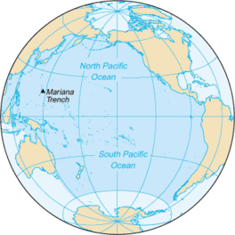

Pacific Ocean
The Pacific Ocean is the largest and deepest of Earth's five oceanic divisions. It extends from the Arctic Ocean in the north to the Southern Ocean in the south, and is bounded by the continents of Asia and Australia in the west and the Americas in the east.
Atlantic Ocean

The Atlantic Ocean is the second-largest of the world's five oceans, with an area of about 106,460,000 km². It covers approximately 20% of Earth's surface and about 29% of its water surface area. The Atlantic Ocean occupies an elongated, S-shaped basin extending longitudinally between Europe and Africa to the east, and the Americas to the west. As one component of the interconnected World Ocean, it is connected in the north to the Arctic Ocean, to the Pacific Ocean in the southwest, the Indian Ocean in the southeast, and the Southern Ocean in the south. The Atlantic Ocean is divided in two parts, by the Equatorial Counter Current, with the North Atlantic Ocean and the South Atlantic Ocean split at about 8°N
indian

The Indian Ocean is the third-largest of the world's five oceanic divisions, covering 70,560,000 km² or ~19.8% of the water on Earth's surface. It is bounded by Asia to the north, Africa to the west and Australia to the east.
Arctic Ocean

The Arctic Ocean is the smallest and shallowest of the world's five major oceans. It spans an area of approximately 14,060,000 km² and is known as the coldest of all the oceans. The International Hydrographic Organization recognizes it as an ocean, although some oceanographers call it the Arctic Mediterranean Sea.
Southern Ocean

The Southern Ocean, also known as the Antarctic Ocean, comprises the southernmost waters of the World Ocean, generally taken to be south of 60° S latitude and encircling Antarctica.